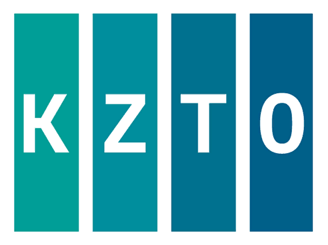
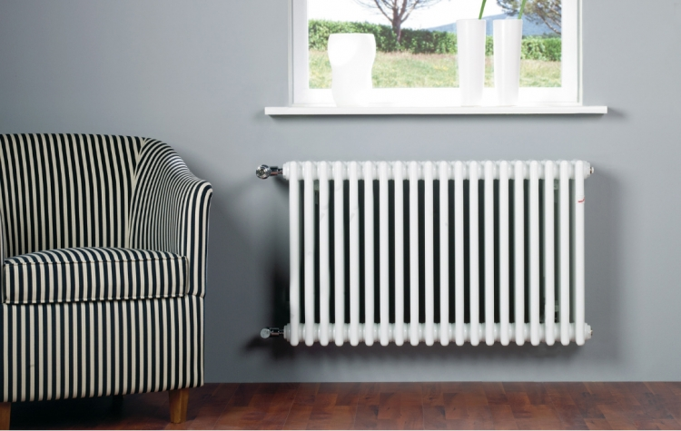

КИМРСКИЙ ЗАВОД ТЕПЛОВОГО ОБОРУДОВАНИЯ «РАДИАТОР»

производит стальные трубчатые радиаторы, конвекторы с медно-алюминиевыми теплообменниками и дизайн-радиаторы из нержавеющей стали.
Продуманный дизайн, высокое качество, надежность удовлетворят вкус самого взыскательного потребителя.
Заказчики с неограниченной фантизией и владельцы необычных помещений — это наши Покупатели! Для них: радиусное и угловое исполнение приборов, центральное нижнее подключение, разнесенное нижнее подключение, нестандартное межцентровое расстояние, индивидуальные варианты установки приборов.
На нашем сайте Вы найдете необходимую техническую информацию, с помощью онлайн-программы сможете подобрать прибор с требуемыми характеристиками и оформить заявку на производство.
Если у Вас останутся вопросы, Вы всегда можете связаться с нами по форме обратной связи или позвонить по номерам телефонов, указанным на странице «Контакты».